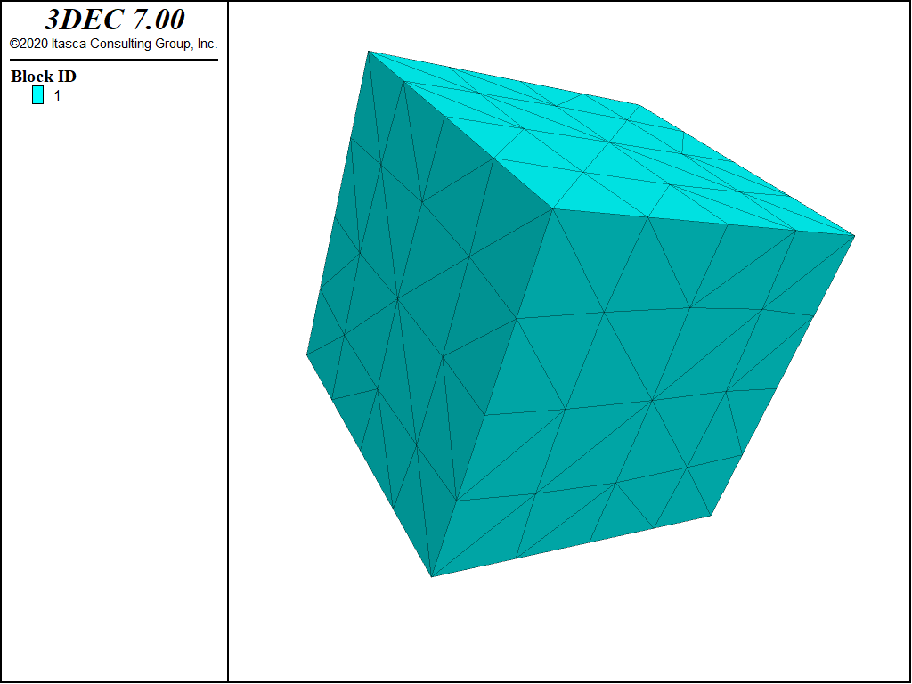
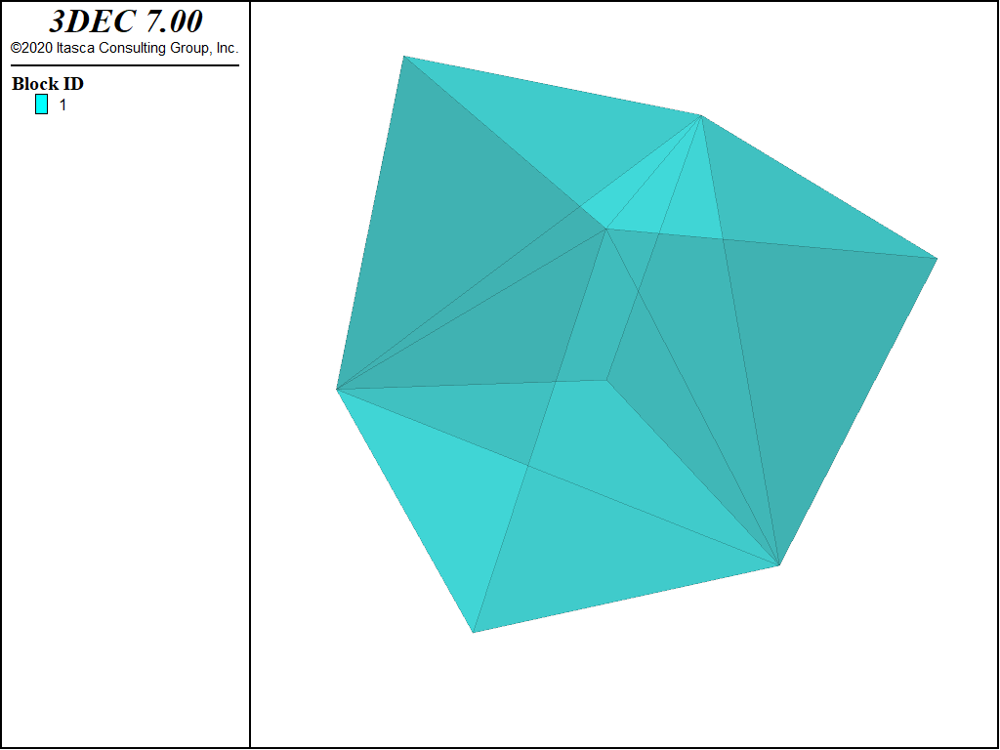
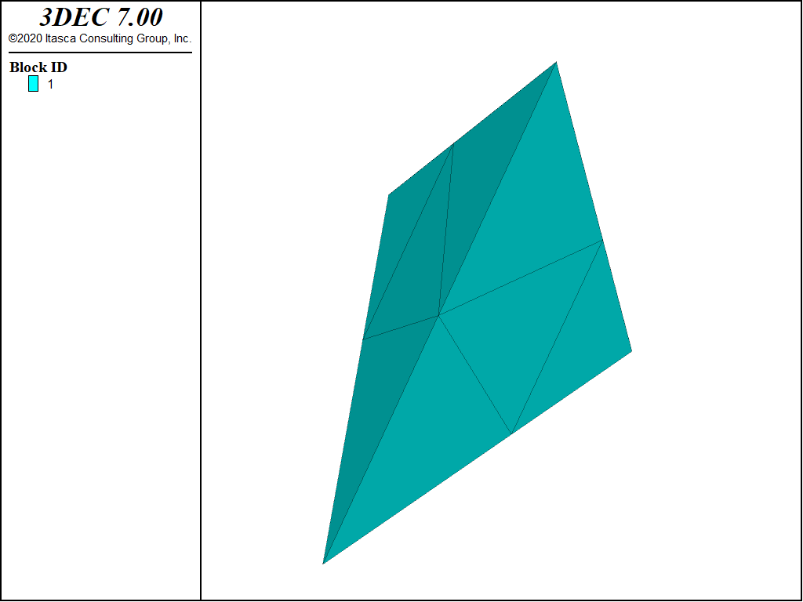
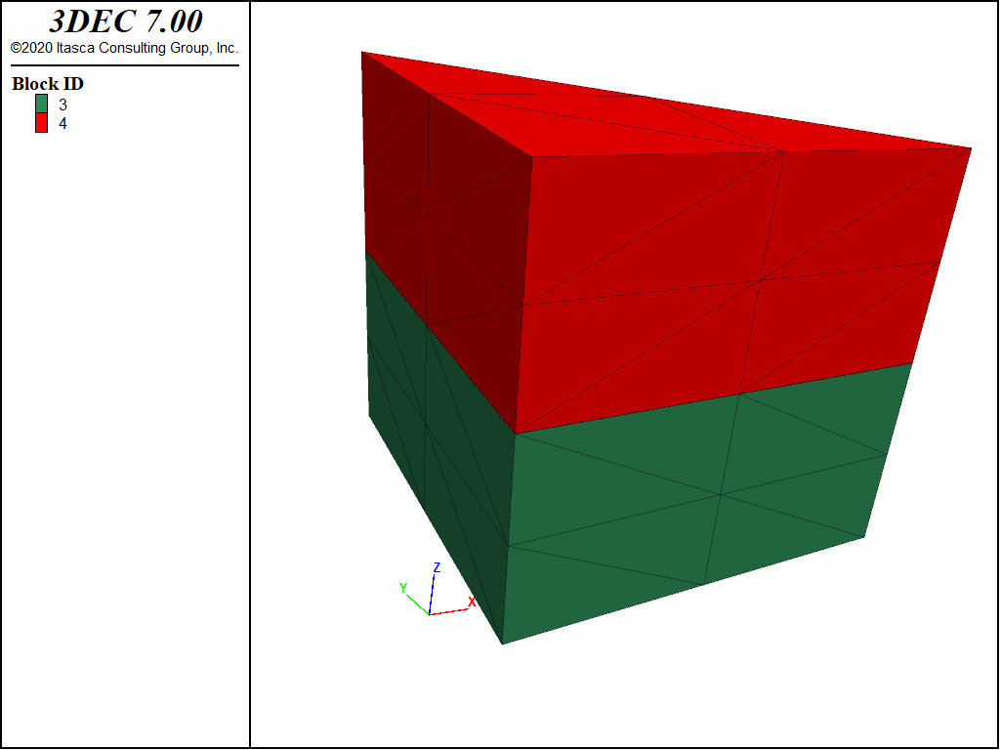
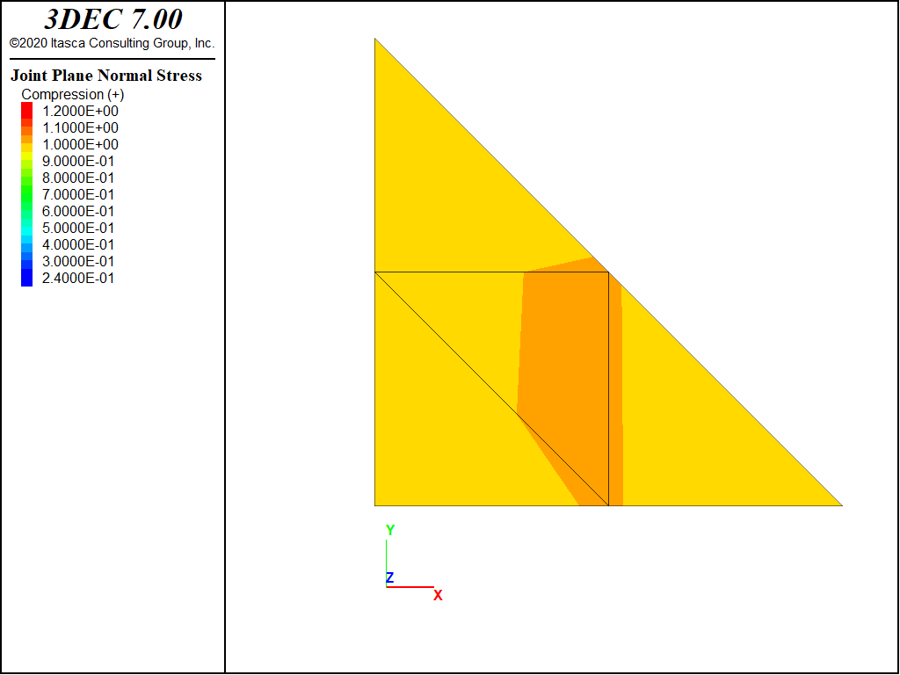
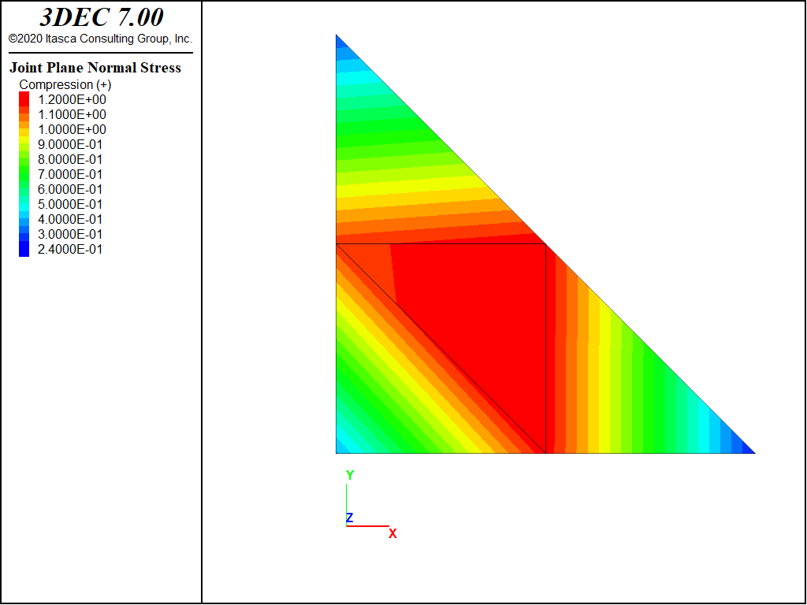

网格单元类型
如果需要可变形块体分析，确定块体切割和边界位置后，应评估不同块体网格密度的模型。使用 block zone generate 或 block zone generate-new 命令指定网格密度和网格单元类型。
应力或应变梯度高的区域，例如开挖附近，应采用最高网格密度。不建议相邻块体之间网格单元尺寸突变。为获得合理精度，相邻多面体内网格单元体积之比大致不应超过 4:1。
四面体
按边长生成区块单元命令（block zone generate edgelength） 或 block zone generate-new 命令，会在任意形状的凸多面体内部自动创建四面体网格单元。如果切割产生细长块体，建议先进一步切割并连接这些块体，再生成网格单元。这样可生成长宽比更接近 1 的网格单元。网格划分前评估块体质量的方法，见块体指标（Block Metrics）。
一般而言，四面体网格单元的塑性结果不如六面体或高阶网格单元准确，见下文。3DEC 假设导致大位移的重要机制与节理和断层上的运动有关。如果要求非常准确的塑性计算，建议采用六面体。如果因问题几何形状限制而无法采用，则强烈建议使用 block zone nodal-mixed-discretization 开启节点混合离散。节点混合离散方案在大多数情况下可得到更准确的塑性结果。该计算形式的详情见可变形块体运动（Deformable Block Motion）。
通过以下命令，将一个 2x2x2 立方块体划分为四面体网格，结果见图 1（Figure 1）。
block zone generate edgelength 0.5


图 1：采用四面体网格单元划分的块体示例。
六面体
生成六面体区块单元命令（block zone generate hexahedra） 命令仅在六面体内部生成网格单元。它创建混合离散（m-d）网格单元，即两套各含五个四面体单元的叠加网格，对于涉及完整块体破坏和坍塌的问题精度更高。详情见《理论与背景》的可变形块体运动（Deformable Block Motion）。对于涉及完整材料塑性破坏的问题，六面体网格单元能提供更准确的结果，但由于只能用于六面块体，在实际问题中的适用性有限。
四面体网格单元对某些破坏模式，例如受约束压缩加载，可提供合理精度；但在承载力问题中，不能准确预测坍塌荷载。采用 生成六面体区块单元命令（block zone generate hexahedra） 与 按边长生成区块单元命令（block zone generate edgelength） 进行塑性分析的结果比较，见以下验证问题：黏性无摩擦材料上的粗糙方形基础（Rough Square Footing on a Cohesive Frictionless Material）和无限莫尔—库仑介质中的圆柱孔（Cylindrical Hole in an Infinite Mohr-Coulomb Medium）。
注意，六面体网格单元不能与节理流体流动一起使用。
请注意，3DEC 实际上为每个六面体网格单元生成 10 个重叠四面体。底层计算按可变形块体运动（Deformable Block Motion）所述混合这些四面体，但绘制网格单元时，看到的是各自具有应力和应变的四面体。同样，发出 block zone list 命令时，列出的是四面体网格单元信息，而非六面体信息。
使用以下命令，对与上例相同的块体划分网格，创建单个六面体网格单元。生成的块体图见图 2（Figure 2）。
block zone generate hexahedra divisions 1 1 1


图 2：含单个六面体网格单元的块体示例（显示为重叠四面体）。
高阶四面体
block zone generate higher-order-tetra 命令生成高阶四面体网格单元，可用于不能采用 m-d 六面体网格划分的块体。这些单元具有附加网格点，精度高于标准四面体网格。每条网格单元边的中点增加一个网格点。只有在块体已通过普通 block zone generate 命令划分网格后，才能使用该命令。model config hotetra 命令必须在创建任何块体之前发出。
高阶网格单元的塑性解比普通常应变四面体单元更准确，但也存在一些缺点。高阶单元不兼容自由场边界和节理流体流动。此外，高阶单元以 8 个四面体的集合存储和绘制。以下命令创建一个四面体块体，其内含单个高阶四面体网格单元。图 3（Figure 3） 显示该单元实际绘制为八个较小四面体。
model config hotetra
block create tet 0,0,0 1,0,0 0.7,0.7,0 0.5,0.35,0.7
block zone generate edgelength 1
block zone generate high-order-tetra


图 3：含单个高阶四面体网格单元的块体示例（显示为 8 个子四面体）。
默认情况下，每个子四面体显示独立应力值。不过，高阶网格单元的应力会投影到网格点上，以获得准确应力结果，见 列出区块网格点应力命令（block gridpoint list stress）。在块体绘图项的等值线依据菜单中选择 Stress，也可绘制投影应力。
为了在可变形块体中获得更准确的塑性解，用户可能倾向于使用高阶四面体而非普通四面体。但由于边中节点的存在，接触力计算精度实际上较差。随着节理刚度相对于网格单元刚度增大，误差也会增大。
图 4（Figure 4） 展示用于检验节理行为的简单块体模型。模型产生一条由单个三角形网格单元面组成、具有 6 个网格点的节理。网格单元赋予杨氏模量 50 GPa。随后加载模型，使网格单元和节理上产生 1 MPa 应力。节理刚度为 1 GPa/m 时，结果良好，节理应力接近 1 MPa（图 5（Figure 5））。增大节理刚度后，可以清楚看到边中节点的力过大，而角点的力过小（图 （Figure）Figure #hotet-joint-2）。该试验数据文件如下。对于节理刚度较高的模型，建议使用普通四面体，并将 block zone nodal-mixed-discretization 设为 on。


图 4：用于检验高阶四面体网格单元节理力计算精度的模型。


图 5：法向刚度为 1 GPa/m 时节理上的法向应力。


图 6：法向刚度为 100 GPa/m 时节理上的法向应力。
program log on
program log-file 'hotet-jkn-1.log'
;
model new
;
model configure highorder
;
block tolerance 0.001
;
block create brick -1 1
block cut joint-set
block cut joint-set dip 90 dip-direction 45 origin 0 0 0
block delete range position-x 0 1
;
block zone generate edgelength 5
block zone generate high-order-tetra
;
block zone cmodel assign elastic
block zone property density 0.0025 young 50000 poiss 0.25
block contact property stiffness-normal 1000 stiffness-shear 100000 friction 40
block insitu stress 0 0 0 0 0 0
block contact property stiffness-normal 1000 stiffness-shear 100000 friction 40
block gridpoint apply velocity-z 0 range position-z -1
block gridpoint apply velocity-x 0 range position-x -1
block gridpoint apply velocity-y 0 range position-y -1
;
block gridpoint apply velocity-z -1e-3 range position-z 1
;
block history displacement-x position 1 1 1
block history displacement-y position 1 1 1
block history displacement-z position 1 1 1
model save 'hotetra-joints1'
;
; 当 szz=1 时，顶部 zdisp = 1.04e-3
model mechanical timestep fix 2e-5
model large-strain off
model cycle 52000
;
block gridpoint apply velocity-z 0.0 range position-z 1
model cycle 500
block contact list force
;
model save 'hotet-jkn1'
program log off
;
;
;
;
| 这些内容对您有帮助吗？… 版权与免责声明 | FLAC3D © 2019, Itasca | 原文更新于 2020 年 10 月 8 日 |